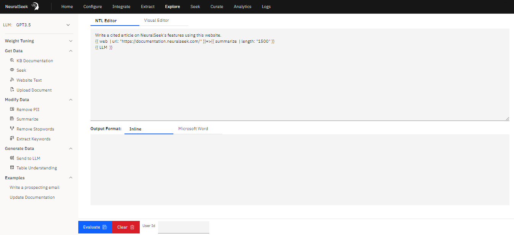

Overview
Introducing "Explore" - an open-ended retrieval augmented generation playground designed to enhance your experience with Large Language Models (LLMs).


Explore is a practical tool that provides you with the following capabilities:
- Choice of LLM: Select your preferred LLM, and seamlessly integrate it with Explore.[^1] [^1]: ❕ Disclaimer: This feature is for users on a Bring You Own Large Language Model plan (BYOLLM).
- Utilize NeuralSeek Template Language (NTL): Craft dynamic prompts using a combination of regular words and NTL markup to retrieve content from different sources.
- User-Friendly Visual Editor: Create custom prompts with an easy-to-use point-and-click visual editor, without the use of NTL markup.
- Utilize NeuralSeek's Seek Feature: Seek a query through the Explore platform and generate an answer based on a corporate KnowledgeBase content.
- Versatile Content Retrieval: Retrieve data from various sources, including Knowledge Bases, websites, local files (PDFs, Docs, CSVs, XLS, TXT), or input your own text.
- Content Enhancement: Improve your data with features like summarization, stopwords removal, keyword extraction, and PII removal to ensure your content is refined and valuable.
- Guided Prompts: Explore provides guidance on LLM prompt syntax and optimal weights to achieve the best results.
- Table Understanding: Conduct searches and generate answers to non-SQL queries based on structured data such as a CSV or Excel file.
- Effortless Output: Easily view your generated content within the built-in editor or export it directly to a Word document, offering convenient control over your output.
- Precision Semantic Scoring: Importantly, all these operations are assessed using our Semantic Scoring model. This allows you to measure content generation based on your specific needs, providing insight into the content's scope tailored to your preferences.
For more information, see Explore Platform.